私のお気に入り
自作の道具たち 撚り合わせタイプ テンカラ用テーパーライン
最近のテンカラ釣りにおいては、テーパーラインは「非主流」となっているそうです。レベルラインと比べた場合、テーパーラインならではの利点もあり、これまで言われてきたような欠点も、それほど致命的ではありません。
要は適材適所ですので、釣り場、釣り方に合った使い方をすれば、テーパーラインもかなりのパフォーマンスを発揮してくれます。インターネット上でも、いろいろな方がいろいろな方法でテーパーラインの自作を試みられています。
この記事では、作者の現時点での製作方法をご紹介いたします。これは、私がテンカラ釣りを始めた時の参考書であった、桑原玄辰 著
「毛バリ釣りの楽しみ方 ヤマメ・イワナのテンカラ釣り入門」
の、p69-74 に書かれている、伝統的な馬の尻尾の毛を用いた手撚り馬素（ばす）の作り方、そして、ブレイデッドラインを使った作り方を組み合わせて、改良・発展させた方法になります。
テーパーラインはテンカラを始めたばかりの方にとって、キャスティングが簡単で覚えやすいという大きな利点があります。ですから、広いスペースや大がかりな治具、高価な電動工具などを使わずに、初心者の方々がなるべく安価に、机の上で楽にできるように.....と考えました。
と、最初は思っていたのですが、だんだんエスカレートしていろいろな道具を買い込んでしまいました。ご了承ください。(笑)
目 次
２．必要な工具、道具
６．素材ラインの撚り合わせ
６－１．手で撚り合わせる場合
６－３．ゴム動力模型飛行機用 ゴムワインダーで撚り合わせる場合
1．必要な材料
- 素材となるライン
ナイロンラインの蛍光色が、しなやかで撚りやすく、視認性に優れています。色はお好みで。
作例では、DAIWA JUSTRON ２号 標準直径 0.235mm イエロー を使用しました。
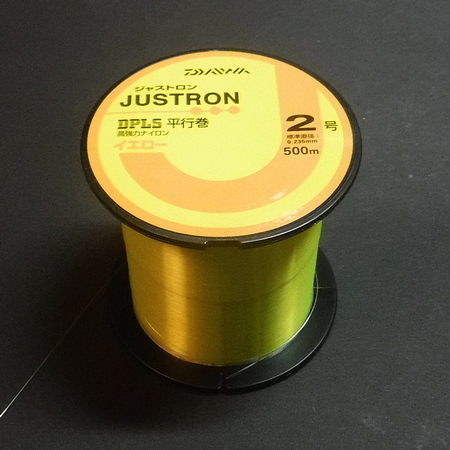
素材ライン DAIWA JUSTRON ２号これよりもやや安いクラスでも可。なるべく長く巻かれたスプールで買うとお得です。太さは２号ないし３号くらいが撚り合わせが楽に、美しくできるのでお勧めです。
（500m 巻き 1,445円、2021/09時点、Amazon.co.jp にて） - 瞬間接着剤
百円ショップ（たしかダイソー）で売っているハケ付きタイプが、柔らかなラインに塗りやすくて便利。 - クリアマニキュア：速乾性トップコート
百円ショップ（ダイソー）に売っています。接続部の仕上げに塗ると、瞬間接着剤が乾いた後のシラケた色合いが、自然な感じに仕上がります。これは完全にお化粧・気分の問題ですので、でき上がったテーパーラインの性能、釣果には無関係です。（笑）
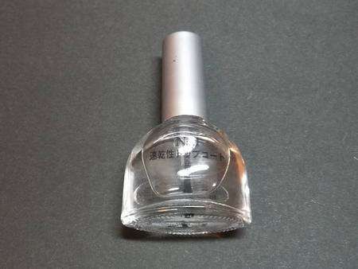
クリアマニキュア：速乾性トップコート - フライタイイング用 シルクスレッド
作例では、TIEMCO UNI-Thread、220D、3/0W という、やや太めで白色のスレッドを選びました。（約45m 巻き 336円、2021/09時点、Amazon.co.jp にて）
撚り合わせた素材ラインの接続時にけっこう力を掛けるので、太いスレッドを使っています。色はお好みで。素材ラインに合わせると、仕上がりが綺麗でしょう。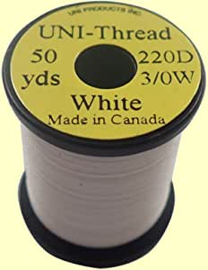
TIEMCO UNI-Thread、220D、3/0W
画像はアマゾンより引用百円ショップで、#40 のストレッチミシン糸 ナイロン100% を買っても使えます。強度、仕上がりとも、シルクスレッドと変わりません。
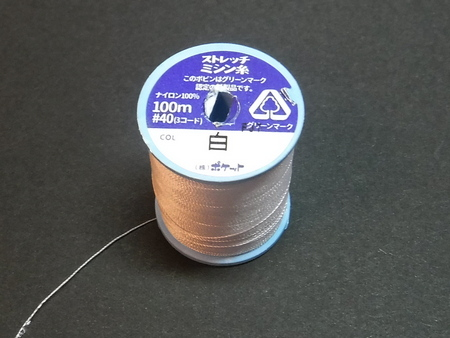
#40 のストレッチミシン糸ただ、作業途中でヨレて、ボビンホルダーの軸に絡んだりしますので、少し面倒です。でも、安価なのでお勧めです。
（税込み 110円 2021/09時点） - リリアン糸（テーパーラインとテンカラ竿の穂先との接続用）
作例では、NSSIN 製の「高級リリアン 小細タイプ 1m」を使用。 釣具店で税込み 220円でした。（2021/09時点）
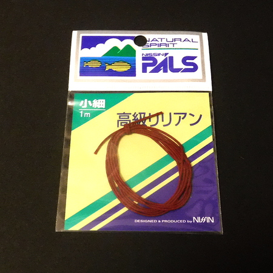
NISSIN 製の「高級リリアン 小細タイプ 1m」
小細タイプを使ってみた感想としては、まだちょっと太いかな？ という感じがしたので、極細タイプの方がしっくりくると思います。
2．必要な工具、道具
2－1．必須の工具
- フライタイイング用 ボビンホルダー（糸巻きの保持器）
フライフィッシング専門店でなくても、釣具店のアシストフック自作コーナーなどに置いてあります。
（参考商品 ボビンホルダー＋スレッド通し２点セット
760円、2021/10時点、Amazon.co.jp にて）
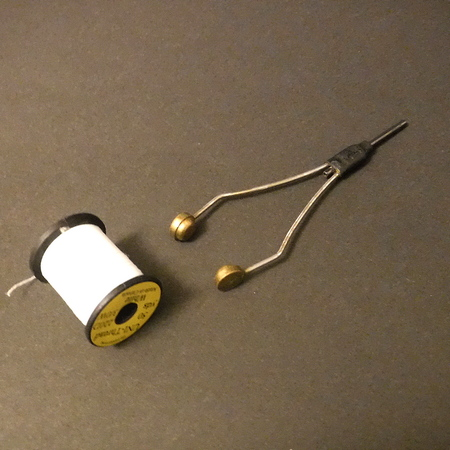
フライタイイング用 ボビンホルダー と スレッド - 裁縫用メジャー
百円ショップで売っている、巻き取りリールの付いていない単純なテープ型のメジャーを、机の端に両面テープなどで貼り付けておくと、素材ラインのカットが素早くできます。
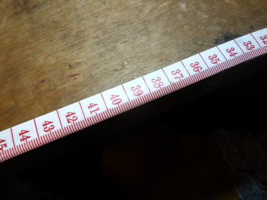
裁縫用メジャーを机に貼り付けたところ - 接続作業台：高さ 25-30cm ほどの丈夫な箱。
（厚い本を積み重ねても代用可）
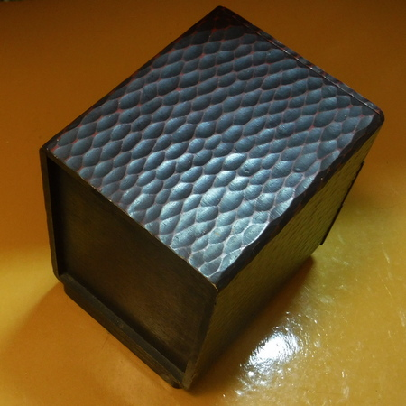
接続作業台 素材ラインを撚り合わせて束になった２つのセクションを接続する時に使います。 - よく切れる小型ハサミ
特にフライタイイング用でなくても可。百円ショップ、手芸用品店で買える裁縫用でOKです。 - デザイン用カッターナイフ、もしくは取っ手付きのカミソリ
百円ショップで買える製品でOKです。巻き上げたスレッド、ミシン糸を切る時に使います。 - 洗濯バサミ ３個
- セロハンテープ
- 油性ペン
２－２．あると、とても便利な工具、材料（なくても作れます）
- ハンディヤーン ツイスター 58-783
（糸撚り器：手芸用品の Clover 社製）
手先の器用な人は、手で素材ラインを撚り合わせることができます。しかし、このハンディヤーン ツイスターがあれば、誰でも均一な撚り合わせ作業が素早くできます。
（税込み 1,305円、2021/09時点、Amazon.co.jp にて）
Clover 社 ハンディヤーン・ツイスター 58-783
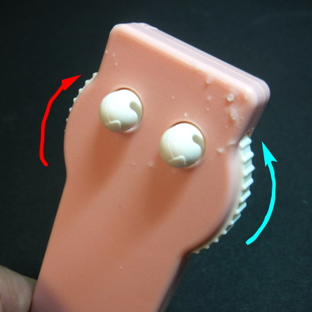
左右両方向への回転が可能な手回しダイヤルと糸かけフック
ヤーン・ツイスターを使うと、手撚りでは難しい、両方向への撚り合わせができます。作者の場合、親指を出し、人差し指を引いて縒る動作しかできないのですが、ツイスターなら簡単に、手では苦手な、逆方向への撚り合わせができます。
手撚りテーパーライン特有の欠点として、キャストした時に伸びて行くラインがひねってしまい、ループが傾き、それがハリスへと伝わり、最終的に毛バリの着水点がブレてしまう.....という現象があります。私も実際、公園で的を狙ってキャスト練習をして始めて気づきました。
この欠点は、榊原正巳氏の著書「たったひとつの毛鉤で勝負」 p97, 124 でも指摘されています。私は、太い方から先端まで、単一方向に撚り合わされた手撚りテーパーラインでは、キャスト時にできるループに撚りの力が蓄積され、ループが伸びて行く時にその力が解放されてハリスに伝わって回転し、毛バリが左右へ逸れるのでは？ と考えています。今回の作例では、ヤーン・ツイスターを使い、連続する各セクションを、互い違いに時計回り・反時計回りで撚り合わせ、それらを接続することで、この欠点の解消を試みました。ヤーン・ツイスターは、下記 b. c. のブックエンド、もしくは工作用小型ベンチバイスで机に固定して使用します。これらがなくても、ツイスターの両面にガムテープを貼って机に固定しても、なんとか使えます。 - 百円ショップで売っているブックエンド（ヤーン・ツイスター、ゴム・ワインダーの固定用）
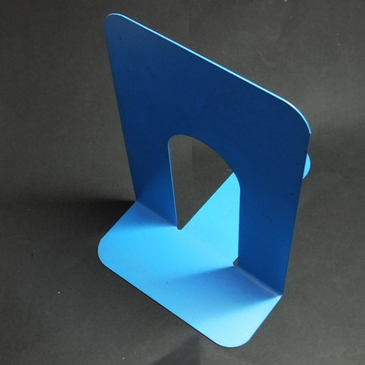
ブックエンド
（ヤーン・ツイスター、ゴム・ワインダーの固定用）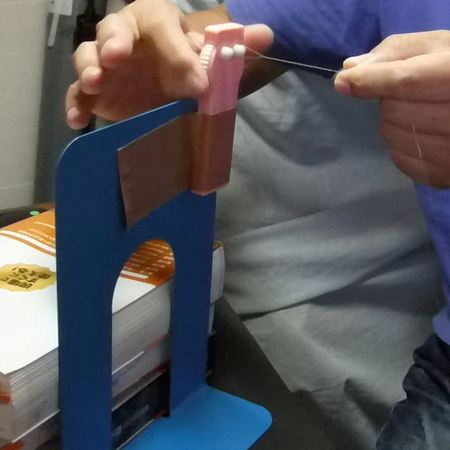
ブックエンドで固定したヤーン・ツイスター。いささか強引で見てくれの悪い方法ですが、実用上は問題なく作業できます。親指と人差し指とで、白いダイヤルを回転させて素材ラインを撚り合わせます。 - 工作用小型バイス
作例では、GREENCROSS アルミ ベンチ バイス 60mm という製品を使っています。
（1,660円、2021/09時点、Amazon.co.jp にて）
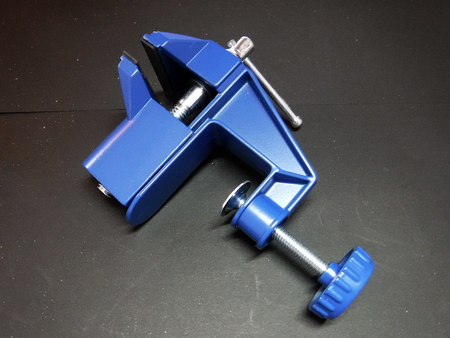
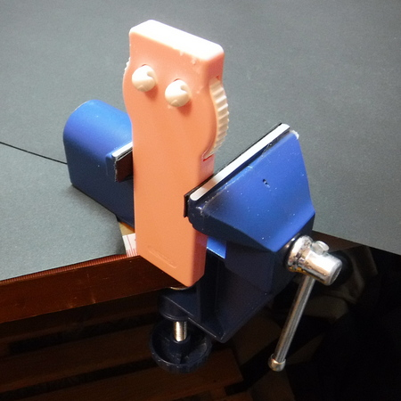
小型ベンチバイスでヤーン・ツイスターを保持したところ。小型ベンチバイスが１台あると、テーパーラインの作成だけでなく、いろいろな作業に使えます。 - フライタイイング用バイス
撚り合わせて束になった素材ライン同士を接続する時に、あると便利です。上記の小型ベンチバイスを使っても接続できますが、少し作業がやりにくいです。フライタイイング用バイスなら、挟み口（ジョー）の下に作業スペースが空くので、ボビンホルダーを回す時に作業しやすいです。すでにテンカラ釣りをやっておられる方ならば、持っている人は多いかもしれません。
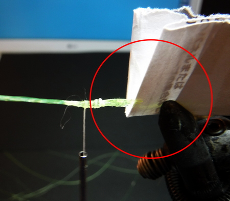
フライタイイング用バイスでテーパーラインの接続作業をしているところ。直接ラインを挟むと傷が付くので、紙を数枚重ねてクッションにしています。 - ゴム動力模型飛行機用 ゴム・ワインダー
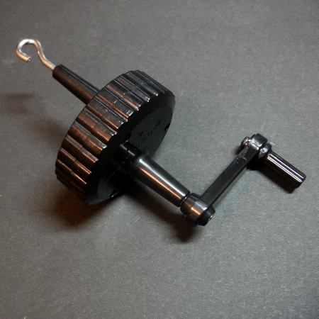
ゴム動力模型飛行機用 ゴム・ワインダーa. のヤーン・ツイスターを購入する前、かなり昔に買って持っていた製品です。昔懐かしい竹ひごと薄紙などで作るライトプレーン用のゴム巻き器です。
現在でも、スタジオミドという模型会社から、ライトプレーン ワインダー（高速ゴム巻き器・ギア比１対４）が発売されており、
スタジオミドのオンラインショップから購入できます。作者は幸運にも、市内の老舗模型屋さんで、在庫２個を買うことができました。このゴムワインダーは、１方向への回転・撚り合わせしかできないのが、非常に残念なところです。オリムパス製絲 ストリング-II
（高速式回転ひも撚り器：オリムパス製絲社製）
作者はまだ使ったことはありませんが、ヤーン・ツイスターと同じ手芸用品のジャンルで、こんな製品もあります。
（税込み 4,263円、2021/10時点、amazon.co.jp にて）
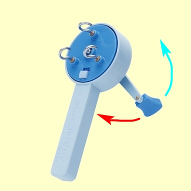
オリムパス製絲社製 ストリング-II
画像はメーカーウェブサイトより引用
このストリング-II の特徴は、ヤーン・ツイスターと同じく左右両方向への回転・撚り合わせができるます。さらに、ストッパーを切り替えることで、
１．３本の素材ラインそれぞれに撚りをかける（下撚り）
２．３本の素材ライン全体を撚り合わせる（上撚り）
作業ができることです。（使い方解説動画はこちら）テーパーライン自作用の素材となるナイロンモノフィラメントは、細くしなやかですので、２．の上撚り工程だけで充分撚りあわせることができると思います。ブックエンドがあれば、本体の固定も問題無く行えるでしょう。惜しむらくは、なかなかのお値段がする.....というその１点だけです。手撚りタイプのテンカラ用テーパーラインの製造販売を始めることになったら真っ先に購入すると思いますが。(笑)
とは言え、市販のテーパーラインの３～４本分ですので、財力に余裕のある方にとってはまったく抵抗なく購入できる価格でしょう。3．参考にしたライン
以下に述べる各種のテーパーラインを参考にしました。特に、重さがどの程度なのかを考慮しつつ実際の釣りに使って、その上で自作する時のデザインを行いました。
- フジノ製ナイロンテーパーライン ソフトテンカラ
不透明オレンジ色 全長 3.3m 重量 0.72g
作者の感覚、経験からはテーパーラインとしては比較的軽量の部類になると思います。しなやかで、視認性も良い色で、良くできた製品です。
手で撚り合わせるテーパーラインの欠点として、障害物に毛バリを掛けてしまい、ラインを持ってハリスを切った時に、テーパーライン全体がヨレて、縮れてしまうという現象がありますが、この製品ではそれが発生しませんでした。ていねいに、大事に使えば数シーズンは持つと思いますので価格もお手頃だと感じます。（1,013円、2021/10時点、Amazon.co.jp にて）
画像はアマゾンより引用 -
とある釣り堀（池で釣るところ）でニジマス釣りに使いましたが、重量が 7.77g もあり、とても重いです。MaxCatch 製の硬めのテンカラ竿でも振ってみましたが、確かに毛バリはビュンビュンと飛びますが、着水した毛バリが釣り人の方へ引かれて戻る「おつり」現象が激しいです。
また、止水では自重でどんどん沈みました。価格は安いのですが、ちょっと使えるシチュエーションが限られるかな、という印象です。とても風の強い日だとか、鈎のサイズや形状から空気抵抗が大きくなった毛バリを遠投するには向いているでしょう。（$7.99：約891円、2021/10時点、
MaxCatch ウェブサイト にて）
画像はMaxCatch ウェブサイトより引用 - 33年くらい昔に買った（笑）、おそらく市販のテーパーライン
全長 3.35m 重量 0.94g - 昔、渓流でのエサ釣り用ナイロンで自作したテーパーライン
全長 3.5m 重量 1.31g - 昔、渓流でのエサ釣り用ナイロンで自作したテーパーライン
中太りバージョン
全長 3.2m 重量 0.80g
素材ナイロンの号数 2，2，3，3，2，3
撚り合わせ本数 2，3，4，5，4，3
何を参考にしたのかさっぱり記憶にありませんが、ラインの中ほどが１番太くなっている（3号を5本撚り）、フライラインで言うとダブルテーパーのようなデザインです。
重量は 0.8g と軽いのですが、毛バリはよく飛びます。
F = 2.95（当時、何らかの数値を算出して、テーパーラインの重さを表すファクター F としたようですが、どうやって算出したのか、今では解読できませんでした。
4．テーパーのデザイン（設計）
この記事では、テンカラ竿と同じくらいの長さの、標準的なテーパーラインを作るとします。作例では 3.6mです。
以下、知ったかぶりの、それらしく見える計算がダラダラと続きますが、作者のとんでもない計算ミスがあるかもしれませんので、ご注意ください！- まず、全長 3.6m （3,600mm） を、６あるいは、８セクションに分割すると考えた場合、１つのセクションの長さ L は、
６分割：L = 600mm
８分割：L = 450mm
です。 - 次に、素材として選んだナイロンラインの標準直径 D と半径 R（mm）、断面積 A（平方mm）、長さ L より、１セクションの１本あたりの体積 V（立方mm）を求めます。
２号ライン 標準直径 D = 0.235mm
半 径 R = 0.1175mm
断 面 積 A = R × R × 円周率 3.1416 =
0.0434（平方mm）
長 さ L = 600 / 450mm
６分割：V = 600 × 0.0434 = 26.04（立方mm）
８分割：V = 450 × 0.0434 = 19.53（立方mm） - そして、ナイロンラインの比重（1.14）より、重量を求めます。
水 1cc （1立方cm = 1,000立方mm） の重さは 1.0g であり、
1 立方mm の重さは 1.0g ÷ 1,000立方mm = 0.001g です。
ナイロンライン 1 立方mm の重さは
0.001g × 1.14 = 0.00114g となるので、
１セクションの１本あたりの重量 W は、
６分割：W = 26.04（立方mm）× 0.00114g = 0.0297g
８分割：W = 19.53（立方mm）× 0.00114g = 0.0223g
です。 - 次に、６ないし８セクションを、何本の素材ナイロンラインを撚り合わせて、どんなテーパー形状を付けるかを考えます。作例では、
８分割： 8, 8, 7, 6, 5, 4, 3, 3 本撚り
として、テーパーの元部分と先端部分をやや長めにしました。あるいは、簡素化して、
６分割： 8, 7, 6, 5, 4, 3 本撚り
でも良いと思います。一般的に、竿に近い部分（フライフィッシングのテーパーリーダーでいうところのバット部）を太く長くすると、パワーがあり、大きな毛バリ、重い毛バリを投げることができます。
また、毛バリ側の先端部分（フライフィッシングのテーパーリーダーでいうところのティップ部）を細く長くすると、静かで繊細な毛バリの打ち込みが可能になるようです。（間違っていたらご指摘ください） - そして、先に計算した、１セクションの１本あたり重量と、何本撚りにするか の本数を掛けて、各セクションの重量を求めます。
８分割 の場合、それぞれセクションの重量は、次のようになります。８本撚り： 0.0223g × 8 = 0.1784g
８本撚り： 0.0223g × 8 = 0.1784g
７本撚り： 0.0223g × 7 = 0.1561g
６本撚り： 0.0223g × 6 = 0.1338g
５本撚り： 0.0223g × 5 = 0.1115g
４本撚り： 0.0223g × 4 = 0.0892g
３本撚り： 0.0223g × 3 = 0.0669g
３本撚り： 0.0223g × 3 = 0.0669g
設計上の合計重量 = 0.9812gちなみに、フロロカーボンのレベルラインですと、
長さ 3.6m、比重 1.78 として
3.5号、直径 0.310mm、断面積 0.0755 平方mm、
重量 = 0.484g
4号 、直径 0.330mm、断面積 0.0855 平方mm、
重量 = 0.548g
ぐらいです。ですから、作例のテーパーラインは、計算上は、フロロカーボンのレベルラインに比べ、約２倍の重量になります。3.6m のテーパーラインで、重量が 1.0～1.5g 程度なら、着水した毛バリが手前に引かれて戻る現象、いわゆる「おつり」は、流れをまたいで対岸のたるみを釣っていても、ほとんど発生しません。 - 今回設計したテーパーラインですと、必要になる素材ライン全体の長さは 19.8m ほどです。撚り合わせ工程での縮み、接続時に必要な余分を考慮すると、約 25～28m ほどかと思われます。ダイワのジャストロンは 500m 巻きですので、18～20本のテーパーラインが作れることになります。
まぁ、一生分はあるでしょうか？（笑）
５．素材ライン、ナイロン・モノフィラメントのカット
- デザインの段階で求めた１セクションの長さ（８分割であれば 450mm ）よりも余裕を見て、長めに切ります。ここで気を付けていただきたいのが、素材ラインは、撚り合わせることでカットした時点よりも短くなる！ ということです。このため、８～５本を撚り合わせるセクションでは、かなり長めにカットしておかないと、撚り合わせ作業がすべて終わった時に寸法が足りなくなってします。
作例では、ちょっと余裕を取り過ぎのような気もしますが、後の接続工程でも余裕が必要ですので、８～５本撚りのセクションでは、450mm のところを 700mm （約５割増し）と見込んでカットしました。４～２本撚りでは、450mm のところを 600mm（約３割増し）ほどで良いです。 - ２本ずつ撚り合わせますので、８本撚りのセクションならば、700mm × 2 = 1,400mm を４本切り出します。
７本撚りのセクションだと、700mm × 2 = 1,400mm を３本、加えて 700mm を１本切り出します。
これを、８本撚りのセクションで、700mm を８本バラバラに切り出すと、あとで再び２本を結んでから撚り合わせることになるので面倒です。上記のように各セクションの倍の長さでカットしてください。 - メジャーを、両面テープなどで机に貼り付けておくと、カット時の採寸が素早く行えます。
メジャーを両面テープで机に貼り付けておくと便利 - 素材ラインのスプールは、利き手と反対側の引き出しや箱に入れておくと、バタバタ・カラカラせずにスムーズに引き出せます。
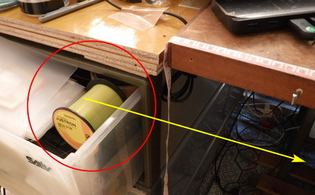
素材ラインのスプールは、聞き手と反対側の引き出しや箱に入れておくと楽です。
６．素材ラインの撚り合わせ
６－１．手で撚り合わせる場合
- カットした素材ラインを中央部で折り曲げ、できたループを利き手の親指と人差し指とでつまみます。
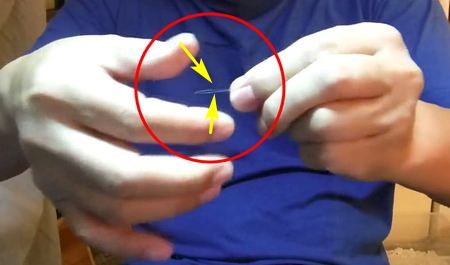
利き手の親指と人差し指とで、素材ラインのループをつまむ - そして、スプールから引き出した時に残る巻き癖を、利き手ではない方の手で、軽く数回しごいて取り除きます。
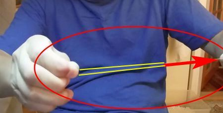
反対側の手を赤矢印の方へ動かし、数回軽くしごいて、素材ラインの巻き癖を取り除く - ループの２センチくらい横を、反対の手の親指と人差し指とで、そっと押さえる感じでつまむ。ここで、素材ラインの一方を人差し指と中指で軽く挟み、もう一方は小指を曲げて軽く挟み、下に垂らしておきます。
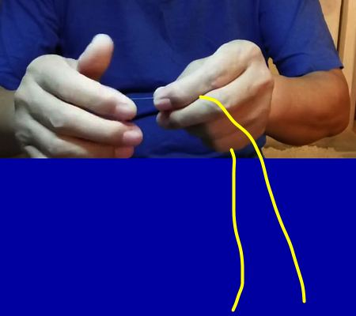
○人差し指と中指の間から、１本目の素材ラインを出して垂らします。（長い黄色の線）
○小指と手のひらの間から、２本目のラインを出して垂らします。（短い黄色の線） - 利き手の親指を向こう側へ、人差し指を手前側に動かして、２本の素材ラインを撚り合わせます。
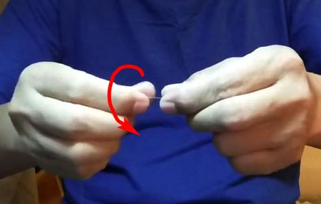
- 利き手で撚り合わせると同時に、その手をスムーズに体の外側へとスライドさせていきます。この時、２本の素材ラインをつまんでいる２本の指（利き手とは反対側の手の指）の圧力が適当であれば、２本のラインが寄り合わされてゆく過程を指の腹で感じ取ることができます。
２本の指の圧力が少ないと、きれいに撚り合わせられません。反対に圧力が強すぎると、指の間でラインが「動けずに死んで」しまって、２本の素材ラインが撚り合わせられていく感覚が感知できません。ちょっと文章を読んだだけでは判りづらいと思いますが、少し試しているうちに、理解していただけると思います。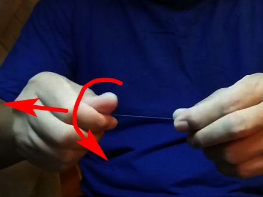
利き手のスライドをゆっくり行うとラインが密に撚り合わせられます。スライドを速くすると、ラインが粗く寄り合わされます。 - 撚り合わせを始めると、まだ縒られてない素材ライン２本が、手の下に垂れ下がっているうちに「くるくる回って暴れたり、絡み合ったり」を始めます。
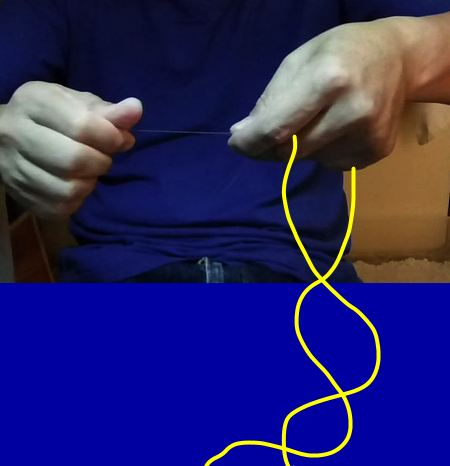
素材ライン２本が絡まないように気を付けながら、ゆっくり撚り合わせてゆきます。もし絡み合ったら、いったん撚り合わせを中断し、利き手でやさしくほどいてやります。 - ひととおり、撚り合わせ作業が終わったら、左手をいったん放し、素材ライン２本を上から垂らして軽くしごき、撚り合わせ後のクセや不自然なヨレを取り除きます。ここで、素材ラインを蛍光灯などの明かりにかざして観察すると、撚り目の均一具合が明瞭にわかります。１回目の撚り合わせでは、多少雑な所があっても気にしなくて良いです。
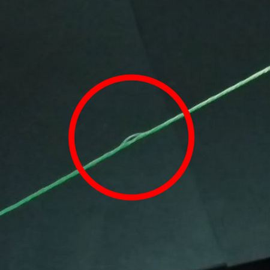
きれいに撚り合わせられていない部分 - もう一度、3. からの工程を繰り返し、仕上げ撚りを行います。１回目と仕上げ撚りの２回行うことで美しく仕上がります。慣れないうちは、仕上げをもう一度行い、ダメ押しの３回撚り合わせを行うとベストな仕上がりとなります。プロではなく、趣味なのですから、ゆっくりと、満足できるまで美しく作れば良いでしょう。
２本撚りの最後では、端部を瞬間接着剤で留めなくても、撚りが戻ってしまうことはありません。 - ３本以上の本数を撚り合わせる時には、撚り始めの部分はきれいにできますが、末端ではどうしても少し乱れてうまくよれません。
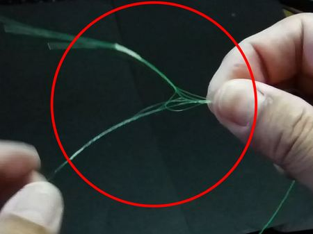
３本以上を撚り合わせる時には、末端が少し乱れるですから、手撚り・ヤーン・ツイスター・ゴムワインダーの、どの方法でも、末端の10cmほどは、手撚りで念入りに仕上げる必要があります。
３本以上の素材ラインを撚り合わせたら、少量の瞬間接着剤を、端部に幅 2mm ぐらい、ハケで塗って、バラけ止めをしておきます。
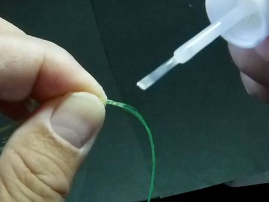
撚り合わせが終わったら、端部に少量の瞬間接着剤を塗っておく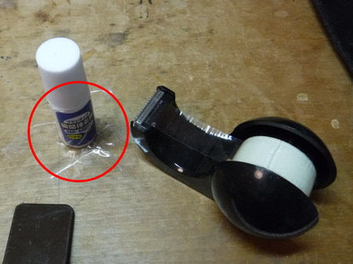
ハケ付き瞬間接着剤のボトルは、作業のじゃまに
ならない位置にテープで固定しておくと安心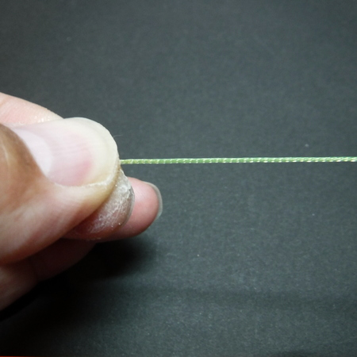
６本撚りの仕上がりはこんな状態、まずまずの仕上がり。 - 予定した本数を撚り合わせたセクションには、撚り始めた方の端にセロハンテープを 2cm ほどタブ状に貼り、油性ペンで何本撚りかを書いておきます。これをやっておかないと、接続作業の時に、何本撚りかがわからなくなって苦労します。
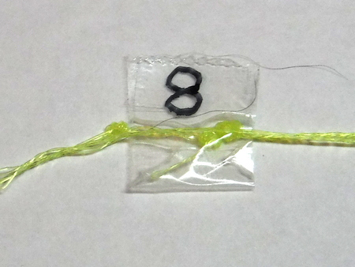
１セクションを撚り終えたら、油性ペンで、何本撚りのセクションかを書いておく - 手による撚り合わせが上手にできない方は、若干の出費が必要になりますが、次に解説するヤーン・ツイスター、あるいはゴムワインダー、および固定用ブックエンドの購入を検討してみてください。いずれも合わせて 1,500円ほどで購入できますので、漁協の入漁券２日分くらいです。どちらかの器具を使えば、驚くほど簡単に、早く、きれいな撚り合わせができます。どちらが良いかと聞かれたなら、効率、作業のしやすさでは少し劣りますが、左右両方向への撚り合わせが可能！ という大きな利点があるヤーン・ツイスターをお勧めします。
指先の器用な方は、ぜひ、手撚り作業で、撚り合わせる方向を左右互い違いにすることに挑んでください。これにより、撚り合わせテーパーラインの大きな欠点が解消できます。後述 ６ー２. １. ここがポイント！ を参照
しかし、あまり無理をして逆方向への撚り合わせを続けると、手が疲れすぎたり、指が炎症を起こしたりするかもしれませんので、ほどほどにしておいてくださいね。
６－２．ハンディヤーン・ツイスターで撚り合わせる場合
- ここがポイント！
ハンディヤーン・ツイスターを使う場合、左右両方向への撚り合わせが可能になります。例えば、最も太いセクションは時計回り、次に続くセクションは反時計回り、というように、隣り合うセクションの撚り方向を順次変えます。
ですから、作例のように全体を８分割した場合には、
セクション１ ８本撚り：時計回り
セクション２ ８本撚り：反時計回り
セクション３ ７本撚り：時計回り
セクション４ ６本撚り：反時計回り
セクション５ ５本撚り：時計回り
セクション６ ４本撚り：反時計回り
セクション７ ３本撚り：時計回り
セクション８ ３本撚り：反時計回り
というように、撚り合わせ作業を始める前に、きちんと計画しておく必要があります。
さらに、素材ラインの本数が同じセクションがありますので（セクション１と２、７と８）、撚り合わせ作業が終わったら、撚り始めた位置にテープで撚り合わせ本数と、回転方向を、
８ーと：時計回り、
８ーは：反時計回り
などのように、自分でわかるように書き留めておきます。
そうしないと、後の接続作業で、どのセクションをどの方向で撚り合わせたのかが、必ずわからなくなります。（経験者は語る.....）
書き留めるのを忘れても、ルーペで撚り具合をよく観察したり、少しだけ指で撚りをほどいたりすれば、確かめられます。しかし、転ばぬ先の杖ということわざもありますので、きちんと書き留めておくことをお勧めします。こうした工夫により、撚り合わせテーパーラインの宿命的欠点と言える、キャスト時のループの傾き → 毛バリの着水点のズレ が解消され、ピンポイントへの正確なキャストが可能になります。
無風時に、空き地や河川敷、公園の芝生などに小さな的を置き、それを狙ってキャストしてみないと感知できない、わずかなズレですが、全てのセクションを単一方向に撚り合わせ、接続したテーパーラインでは、確実にこのズレが発生します。 - 小型ベンチバイスを机に据え付けます。この時、撚り合わせられてゆく途中の、余りの素材ラインを机と体の間に垂らして、自由に動けるスペースを確保するために、バイスをやや斜めにセットします。
- ハンディヤーン・ツイスターを、しっかりと小型ベンチバイスで保持します。
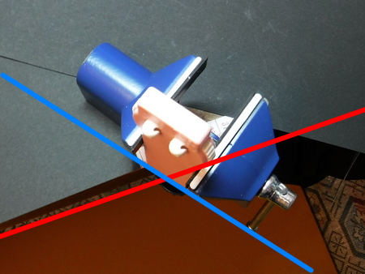
ハンディヤーン・ツイスターを小型ベンチバイスで保持したところ。赤線が机の端、青線がバイスとヤーン・ツイスターの向き - カットした素材ラインを中央部で折り曲げ、できたループをつまみます。そして、スプールから取り出した時に残っている素材ラインの巻き癖を、手で軽く数回しごいて取り除きます。
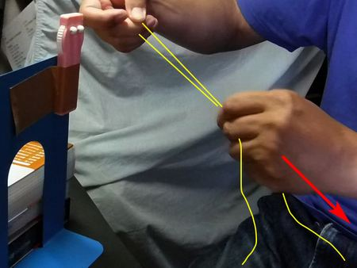
素材ライン（黄色い線）の巻き癖を、手で数回軽くしごいて取り除く。（赤色矢印が手を動かしてしごく方向）
これ以降の写真では、安価なブックエンドでヤーン・ツイスターを保持しています。 - 素材ラインをヤーン・ツイスターのフックに掛け、フックから２センチくらい横を、ツイスターとは反対側の手の親指と人差し指とで、そっと押さえる感じでつまみます。ここで、素材ラインの一方を人差し指と中指で軽く挟み、もう一方は小指と手のひらで軽く挟んで、２本ともおなかと机の間のスペースに垂らしておきます。
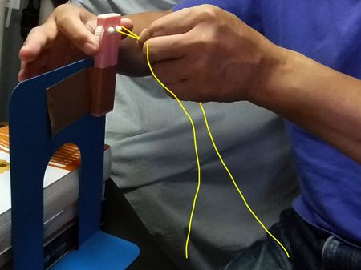
黄色の線が素材ラインを示す。ヤーン・ツイスターで撚り合わせ始めると、余りのラインが手の下で暴れるので、自由に動ける空間を取り、２本とも垂らしておく。 - ツイスターのダイヤルを利き手の親指と人差し指とで回転させて撚り合わせると同時に、ラインをつまんでいる反対側の手をスムーズに、ツイスターから遠ざかるようにスライドさせます。
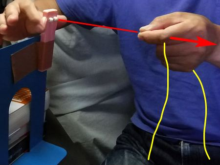
赤色の線は、撚り合わせられた素材ライン、黄色の線は余って垂れている２本の素材ライン、赤色矢印は、ツイスターから遠ざかる手の動きを示す - これ以後のプロセスは、手撚りの時と同じです。
６－3．ゴムワインダーで撚り合わせる場合
- 工作用小型バイスを机に据え付けます。この時、撚り合わせる時に、残りのラインを机と体の間に垂らして、自由に動けるスペースを確保するために、やや傾けて斜めにセットします。
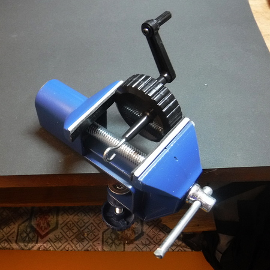
小型ベンチバイスを机に固定し、ゴムワインダーを保持したところ - 円形ボディーのゴムワインダーを小型ベンチバイスで保持します。この時、机とハンドルの間に、ハンドル回転用のスペース（黄色の矢印）を取るために、目いっぱい上側で固定してください。ボディ形状が円形なので、小型ベンチバイスでの固定が、ぎりぎりいっぱいになります。
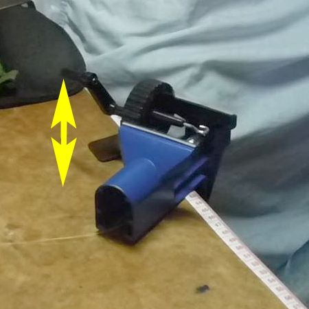
ゴムワインダーを、ハンドルを回せるスペース（黄色の矢印）を確保して、小型ベンチバイスにセットするヤーン・ツイスターよりもギヤ比が高いので、高速で撚り合わせできますが、撚りをかけ過ぎてしまう傾向がありますので、ごくゆっくりとハンドルを回してください。
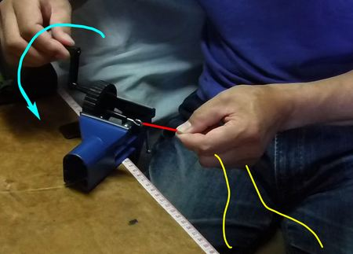
水色矢印がハンドルの回転方向、赤色線は撚り合わせられた素材ライン、黄色線は、余って垂れている２本の素材ラインを示す。 - これより後の工程は、前述 ６ー２. 4. で述べたのと同じです。
- 小型ベンチバイスを購入する代わりに、ブックエンドと数冊の重い本を利用し、ゴムワインダーをブックエンドの背面にテープで固定する方法もあります。いささか見た目は貧弱かつ、やっつけ仕事の感がありますが、撚り合わせ作業は問題なく行えます。
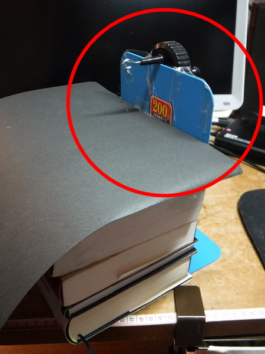
ゴムワインダーをブックエンドの背面にテープで固定したところ。厚い本を数冊載せて、重しにしている。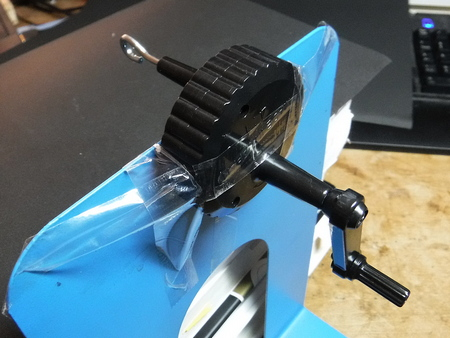
両面テープと粘着テープでゴムワインダーをブックエンドに固定しました。これもいささかやっつけ仕事の感がありますが、少しでも出費を抑えるためです。
ゴムワインダーの位置が高くなるので、小型ベンチバイスの時よりも作業が楽になります。（負け惜しみ.....）
６－４．撚り合わせのコンビネーション
- ８本撚りの場合、２本＋２本＝４本、それに２本を加え６本、さらに２本を加えて８本にします。
こうすると、作業量は増えますが、４本と４本を合わせるよりは、仕上がりが美しくなります。 - ７本撚りの場合、２本＋２本＝４本、２本＋１本＝３本、最後に４本＋３本＝７本にします。
- 以下、６～２本のセクションも同様に撚り合わせます。
７．各セクションの接続
- 太い方のセクションから接続してゆきます。その理由は、太い方が接続工程の作業がやりやすく、早く慣れるからです。
完成したセクションの長さが、設計した値＋余裕分 に足りているかを、机に張ったテープメジャーで確認します。次にその位置に少量の瞬間接着剤をハケで塗ってバラけ止めを行います。
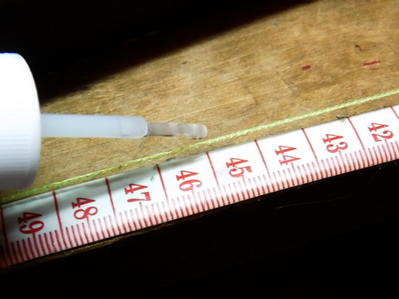
設計通りの長さを確認し、少量の瞬間接着剤を※最も太いセクションには、リリアン糸を接続するためのループが必要ですので、 5cm ほど余裕を取って、長めの位置に瞬間接着剤を塗ります。
ハケで塗ってバラけ止めを行う
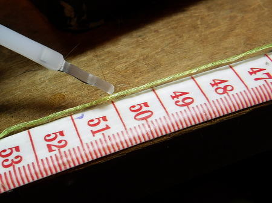
最も太いセクションにはループが必要なので、5cm ほど余裕を取ってからカット - かみ合わせ部分の長を確保するために、瞬間接着剤を塗った位置（設計した１セクションの長さ）より 1.5cm ほど長めの位置でカットします。
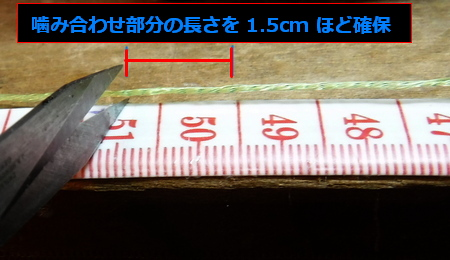
かみ合わせ部分に必要な長さを見込んで、1.5cm ほど長めにカット - カットしたセクションを、かみ合わせ部分が作業台から外側に出るように、テープでしっかり固定します。
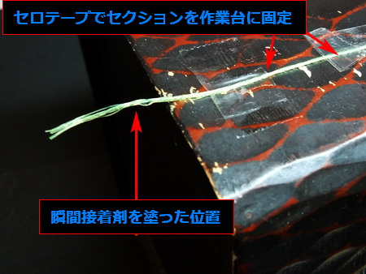
セクションを接続作業台にテープでしっかり固定セクションの保持に、フライタイイング用バイスを用いる場合には、素材ラインに傷が付かないよう、何枚か重ね紙で挟みます。
フライタイイング用バイスでテーパーラインの接続作業をしているところ。バイスで直接ラインを挟むと傷が付くので、紙を数枚重ねてクッションにしている。蛍光イエロー色の素材ラインからぶら下がっているのが、ボビンホルダーの先端と白色のスレッド。 - ２番目のセクションにも、上記の工程 1. 2. の作業を行います。
- この時点で、両方のセクションの端部は、撚り合わせがほどけて、ささくれだってほつれた状態になっています。
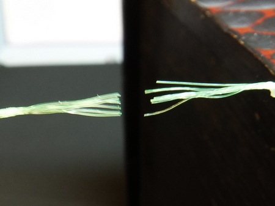
左右のセクションの端部が、ささくれだってほつれた状態 - その端部同士のほつれをかみ合わせます。
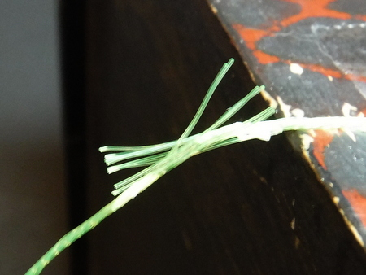
端部同士のほつれをかみ合わせる - かみ合わせた部分に少量の瞬間接着剤を塗布し、乾燥を待ちます。
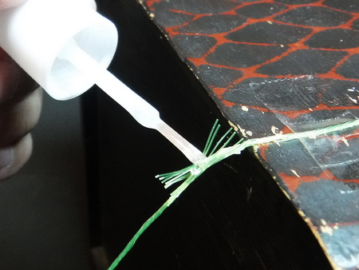
瞬間接着剤で仮止め、乾燥を待つ - フライタイイング用スレッド（もしくはナイロンミシン糸）で、輪っかを作り、かみ合わせた部分の中央を１回、しっかりと縛ります。
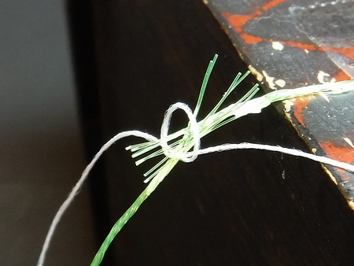
かみ合わせた端部の中央を１回縛る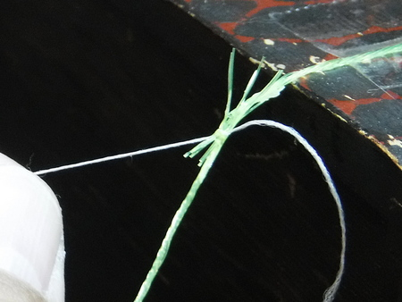
スレッドを締め終えたところ - スレッドで巻き締めた中央部に、少量の瞬間接着剤を塗り、乾燥を待ちます。
スレッドで巻き締めた中央部に、少量の瞬間接着剤をハケで塗る - ２番目のセクションの、接続部とは反対側の端を机にテープで仮止めします。あるいは、L型ヒートンを机にねじ込み、洗濯バサミで挟んで垂らし、テンションを掛けて真っすぐにします。こうすることで、接続部の下に空間ができて、ボビンホルダーを回しやすくなります。
洗濯バサミで挟んで垂らし、テンションを掛けて２番目のセクションを真っすぐにする - ボビンホルダーを接続作業台の下に回し込んで、スレッド（ミシン糸）で接続部全体をしっかり巻き締めてゆきます。まず中央から左側へ巻いて、接続部と通常部の境界まで巻き締めたら、スレッドを重ねて巻いて太くして、段差ができるだけなめらかになるようにします。
スレッド（ミシン糸）で接続部全体を巻き締める段差ができるだけなめらかになるようにスレッドを巻く - 左側の端を巻き終えたら、右側へと巻き締めてゆき、同様に段差がなくなるように重ね巻きします。最後に、スレッドで大きな輪っかを作り、その中にボビンホルダーを通して、中央部で結び締めてから、もう一度、接続部全体に瞬間接着剤をハケで塗ります。
- 仕上げにクリアマニキュア（速乾性トップコート）を塗ります。
仕上げにクリアマニキュアを塗る接合部の長さは、最大で2cm程度に収めると、見栄えが良くなります。瞬間接着剤を使うので接続部が硬くなりますが、完成したテーパーラインの動き、ターンオーバーには問題ありません。強度も充分です。
- 全セクションを接続したら、１番太いセクションの端部にループを作ります。工程は、1. ～ 10. と同様です。
上：２つのセクションの接続部いささか雑な仕上がりで恥ずかしいです。特に接続部はもう少し美しく仕上げないと、夏場の釣りでクモの巣がラインに付着した際、取り除くのがとても面倒です。段差がないように仕上げ、スレッドの凸凹もなく、スムーズな接続部が作れれば、クモの巣も気になりません。
下：テーパーライン元部分のループ - テーパーラインの先端には、ハリスを接続するために、次のような処理を行います。
○小さなループを作る
○ヘラブナ釣り用丸カンを結ぶ
○８の字結びでコブを作る
８の字結びでコブを作る
などの方法で、ハリス（先糸）が結べるように仕上げます。いずれにしても、結束部は瞬間接着剤でほつれ止めを行います。 - 最も太いセクションの端に作ったループに、リリアン糸を付けて、テンカラ竿の穂先に結べるようにします。リリアン糸を長さ 18～20cm にカットし、両端を一重に結んで輪っかを作ります。
最も太いセクションのループに、リリアン糸を付けるリリアン糸の輪っかとテーパーラインのループとで、Loop to Loop の方法で接続します。
リリアン糸の輪っかとテーパーラインのループとを、Loop to Loop の方法で接続
８．完成重量の測定とデザインの記録
テーパーラインが完成したら、精密なデジタル・スケール（はかり）で重量を量っておくと、別のパターンの作成時に役立ちます。接続部に瞬間接着剤を使ったりしますので、計算上よりも少しだけ重くなります。
完成したテーパーライン。長さ 3.6m、
８分割、8-8-7-6-5-4-3-3 本撚り、重量 1.23g計算上の重量 0.98g 完成後の重量 1.23g となり、セクションの接続にスレッドや瞬間接着剤を使うので、少し重くなりました。
完成したテーパーラインは、細い方の端から、手の指４本に、ゆっくりクセとヨレを取りながら輪っかの形に巻き取ってゆきます。巻き取りの最後には、リリアンの付いた太い端を３回ほど、輪っかの周りに斜めに通して巻き留めておきます。
完成したラインは、手の指４本に巻き取って輪っかにするシール付きビニール袋（10×16cm程度）にラベルを貼り、完成したテーパーラインのデザイン：全長・重量・セクション分割数・各セクションの撚り本数・作成年月などをメモしておきます。
シール付きビニール袋で保管・携行ラベルに、全長・重量・セクション分割数・
各セクションの撚り本数・作成年月などをメモしておくこうして保管し、釣り場へ携行すれば、どんなデザインだったかを忘れたり、現場でどれを取り出すかを迷うことがありません。携行用ウォレットは、こちらの自作記事を参考にしてください。
９．試し振り
ぜひ、実際に釣りに使う前に、完成したテーパーラインの試し振りをしてみてください。ハリス（先糸）には、鈎先をカットした毛バリか、毛糸の切れ端を短く付けておきます。人のいない公園、河川敷などで、洗面器などを的にして、それを狙って毛バリを振り込んでみます。
テーパーラインの試し振りこの日は 3.2m の竿、3.6m のライン、8セクション（7-7-6-5-4-3-2-2 本撚り、少々軽め）、1.5m のハリス、という仕掛けで、５メートル離れた直径18cm の皿を狙いました。赤丸内の黒いものが毛バリです。
的を置かずに漠然と毛バリを振り込むだけでは、ラインの特性がわかりにくいです。また、異なるデザイン、重さのラインを次に自作する時の参考にもなりません。必ず的を狙って、キャスト練習をしましょう。この時、テーパーラインのループのほどけてゆく状況、ライン・ハリスの伸び、フライが着水する時のスピード、全体のでき具合についての感想をメモしておけば万全です。
やや軽めのテーパーライン
試し振りの結果 全体の成功率 7.2%約7分のテストキャストを２回繰り返した結果、成功率は全体で 7.2% でした。100回に7回しか的に入らなかった.....（泣）
後からじっくりビデオを見直すと、この日テストしたテーパーラインは、すべてのセクションを同一方向に縒り合わせ、それらを接続してあり、毛バリが的の左側 20～30cm の位置に逸れて落ちる傾向がはっきりとわかりました。次回は、８セクションで、少し重め、
撚り合わせ本数：8-8-7-6-5-4-3-3 本 というテーパーとして、各セクションを交互の回転方向で撚り合わせてみます。結果が出たらまた報告いたします。
私のお気に入り 目次へ
サイトマップ
ホームへ
お問い合わせ

{kind=link}
{kind=link}